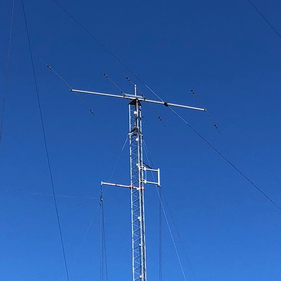
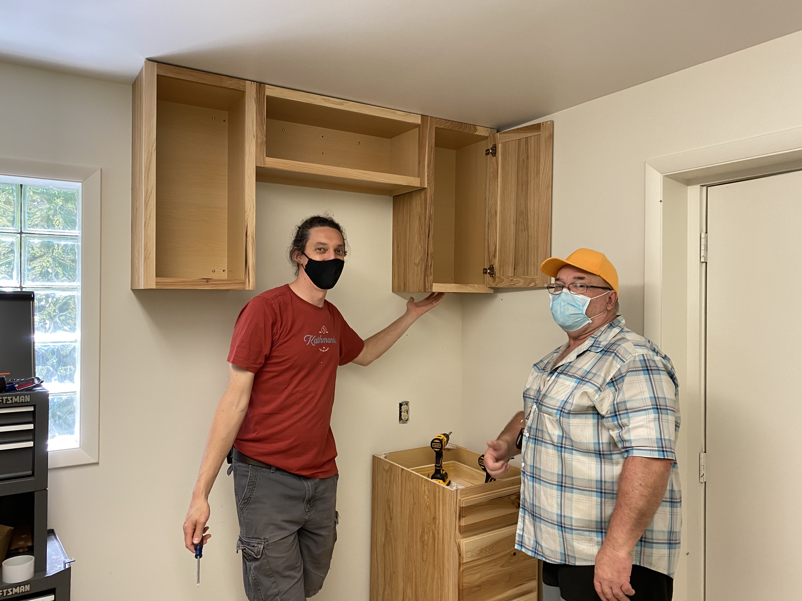
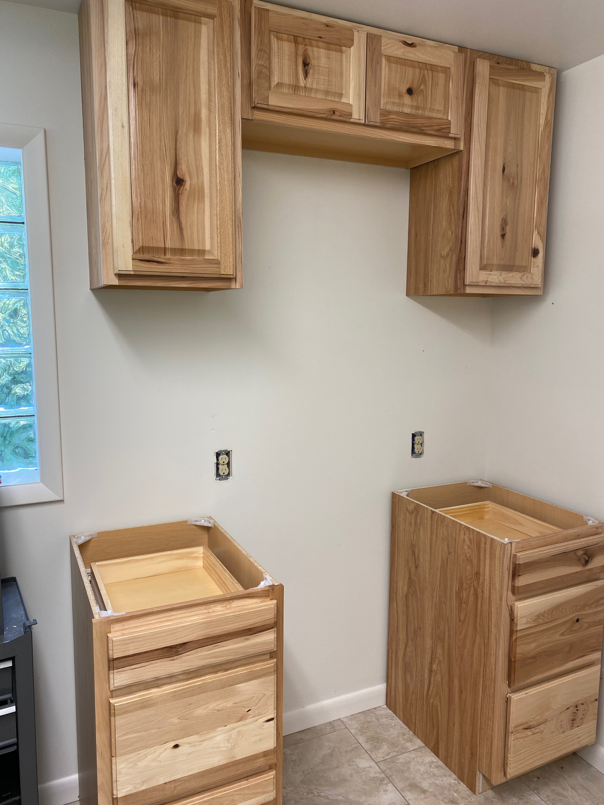

- Work day (NK8Q, KC3FDD, N3LI, K3ROG)
- removed Yagi from precarious position for disassembly
- installed cabinets on wall
- N3LI installed countertop
- N3LI installed IC-9100; updated digital software on IC-7610 & K3S
2024-06-05 11:49:11.734197
Recent activities
Equipment status





Future work
Finish cabinet installation- Peform antenna maintenance prior to contest season
- Repair 40m dipole (West 60’ Tower)
- Install & test private network appliance with help from Mark K0LO
- Repair and reinstall multi-band Yagi on North 80’
Under consideration
- Research rotators & controller replacements
- Replace keyed lock with keyless
- Run 2nd coax lines to NARC-1 and NARC-2 to take advantage of dual receivers in both rigs
- Digital-only station (IC-9100?)
- Replace PCs and monitors